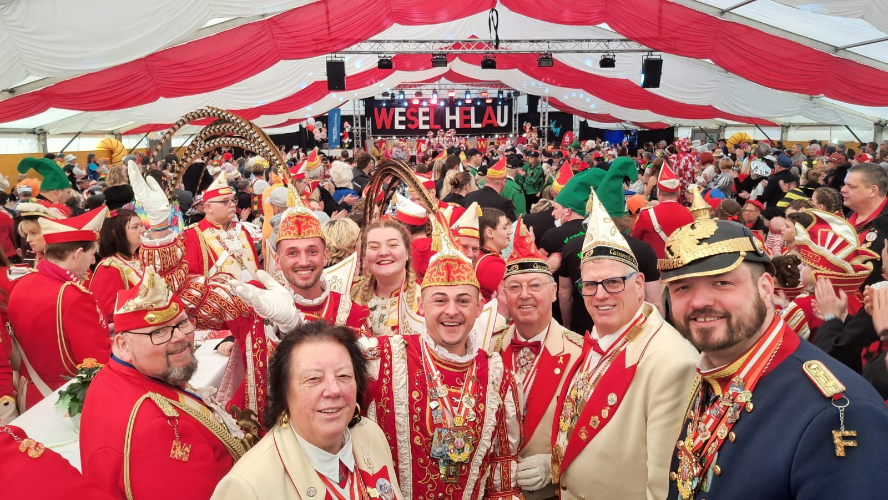
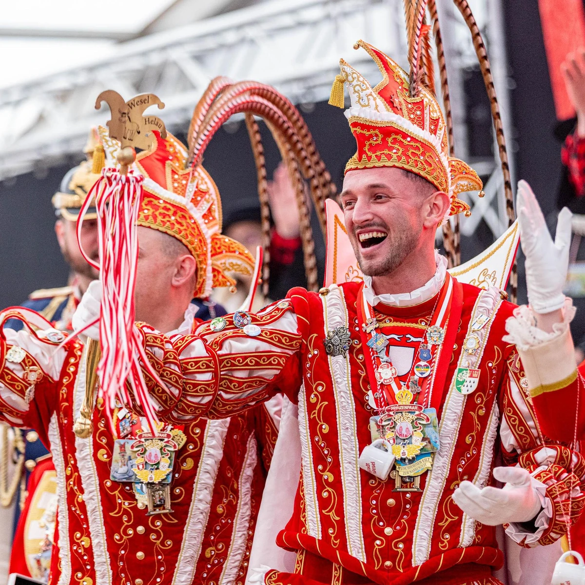
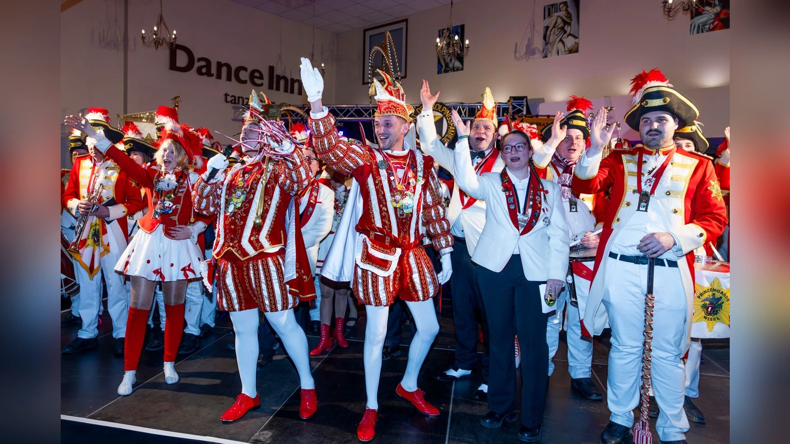
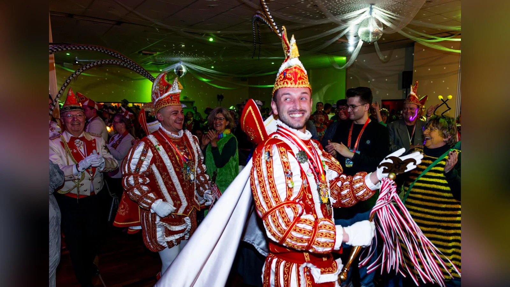
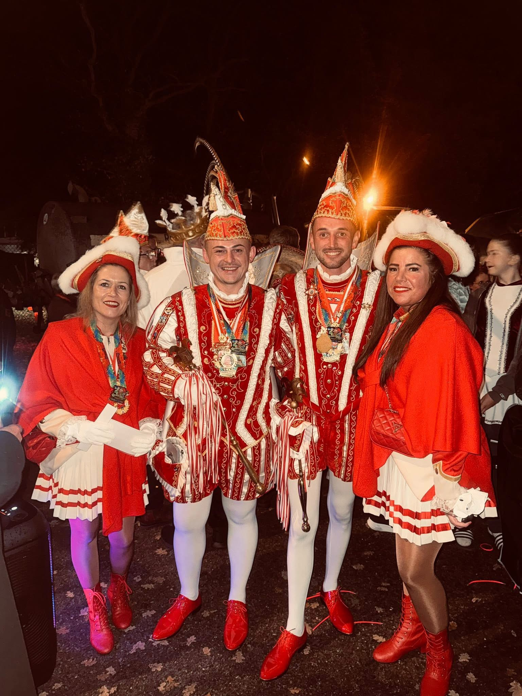
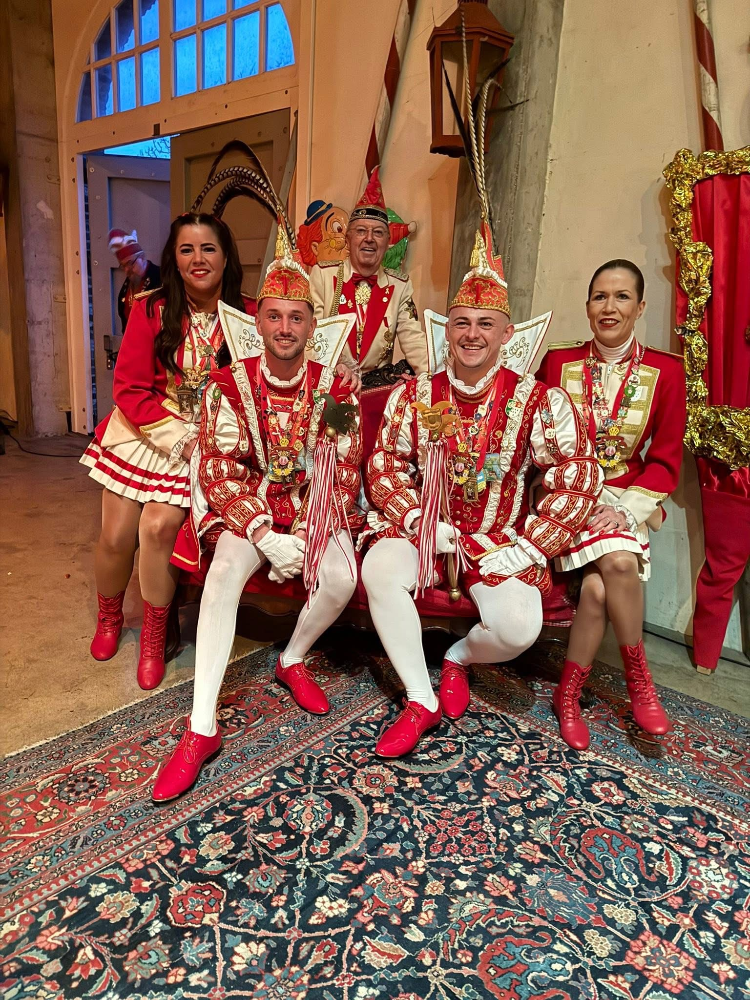
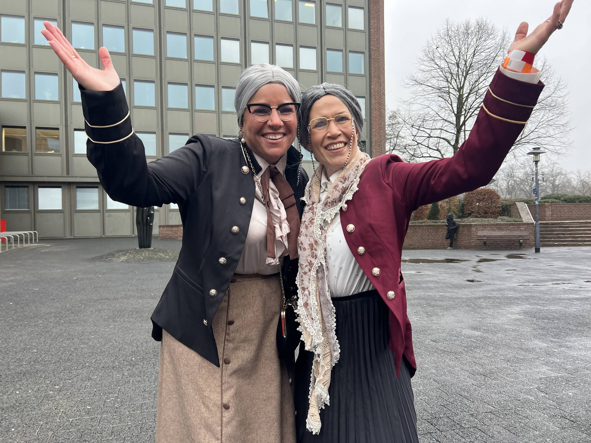
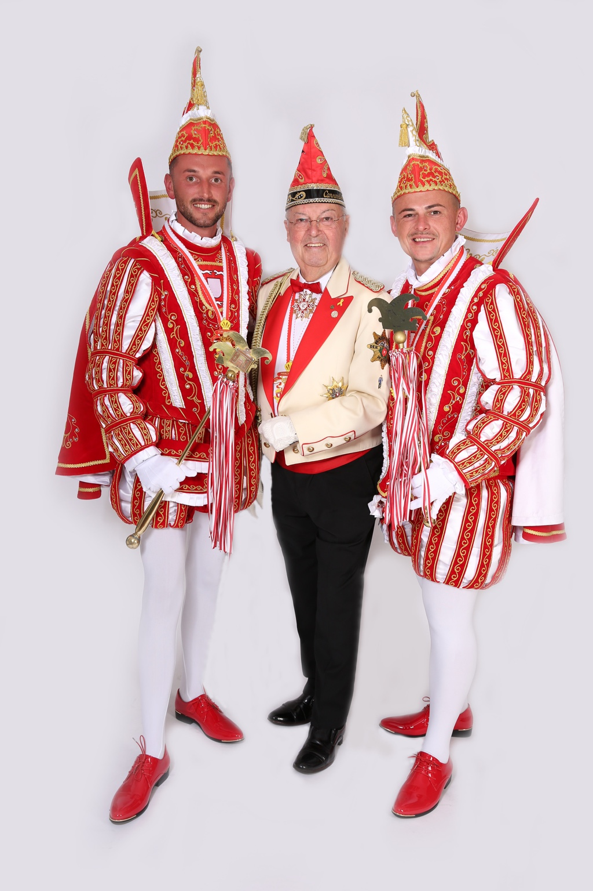
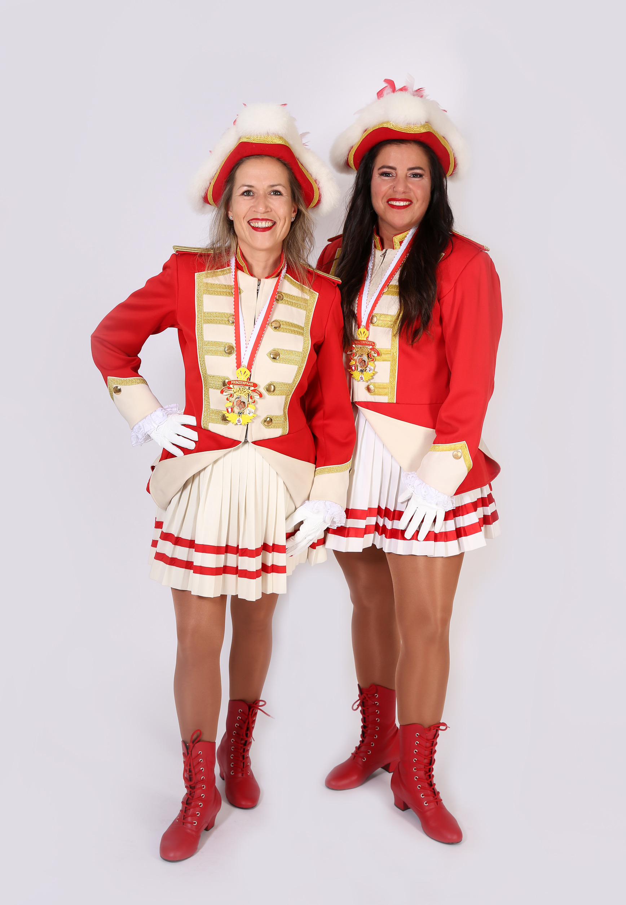

Die Session 2025/26 in Bildern
Eine besondere Session des Weseler Karnevals: zwei Prinzen an der Spitze, begleitet von Pagin Silvana Fuschetto, Pagin Nicole Wienköp und Prinzenführer Luc Eben. Diese Seite sammelt Augenblicke, Begegnungen und Erinnerungen einer närrischen Zeit, die Wesel gemeinsam gefeiert hat.

Karneval verbindet Menschen
Ob auf der Bühne, im Saal, beim Einzug oder mitten im närrischen Treiben: Die Session lebte von Begegnungen, Freundschaften und der gemeinsamen Freude am Karneval.




Gemeinsam durch die Session
Zu einer solchen Session gehören Menschen, die begleiten, organisieren, unterstützen und jeden Termin zu einem Erlebnis machen. Ein besonderer Teil davon: die Pagen und Prinzenführer Luc Eben.


Mehr als Termine und Auftritte
Der Weseler Karneval lebt von den Menschen, die sich begegnen, gemeinsam lachen und Erinnerungen schaffen. Genau diese Momente machten die Session 2025/26 so besonders.

Luc Eben – immer an ihrer Seite
Seit vielen Jahren begleitet Luc Eben die Weseler Tollitäten. Auch in dieser besonderen Session sorgte er dafür, dass Termine, Auftritte und Abläufe zusammenpassten – mit Erfahrung, Leidenschaft und seinem bekannten Sinn für Ordnung.
Mehr über Luc Eben →
Die Pagen der Session
Pagin Silvana Fuschetto und Pagin Nicole Wienköp begleiteten die beiden Prinzen durch die Session und waren bei den zahlreichen Auftritten fester Bestandteil des Hofstaats.
Das Aftermovie der Session 2025/26
Die schönsten Momente dieser besonderen Session noch einmal im Film – direkt hier auf der CAW-Seite.